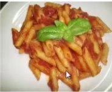

Penne al pomodoro

Ingredienti
Di seguito riportiamo gli ingredienti per prepararee il nostro piatto
- 300g di penne
- 200g di passata di pomodoro
- 3 spicchi di aglio
- 50g di capperi
Preparazione
- Soffriggere la passata di pomodoro con gli spicchi d'aglio
- Scolare la pasta e saltarla in padella
- Versare la salsa sulla pasta, saltandola
- Servire il piatto